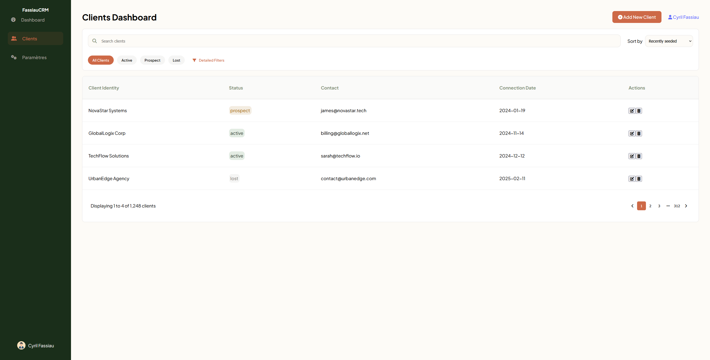
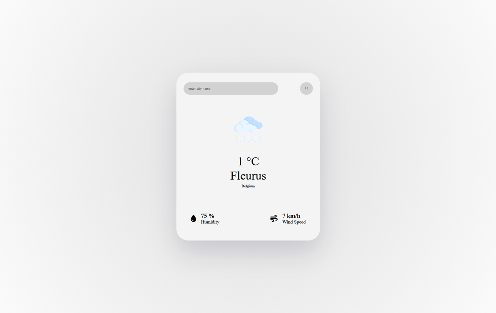
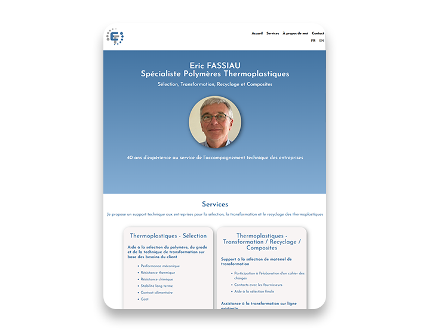
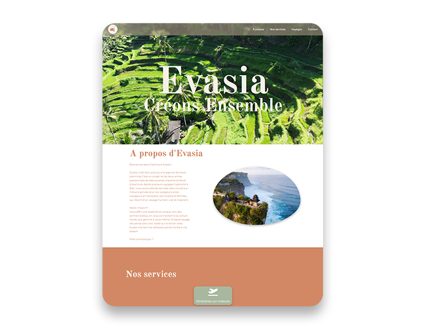
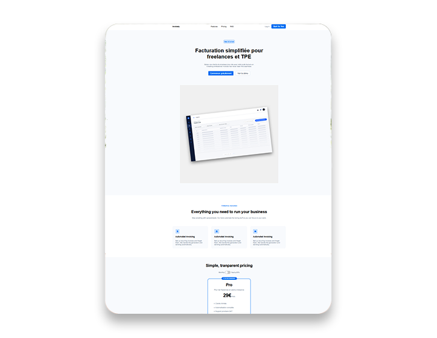

Développeur front-end
Développeur frontend issu d’un parcours d’artiste 3D technique, je conçois des interfaces web claires, fiables et orientées utilisateur. Après plusieurs années en production 3D, j’ai progressivement orienté ma carrière vers le développement web afin de me consacrer à la création de véritables produits logiciels. J’apprécie particulièrement transformer des idées complexes en interfaces structurées, maintenables et performantes, tout en continuant à approfondir mes compétences techniques au sein d’environnements collaboratifs.Disponible pour un poste de Développeur Front-end Belgique / Remote
Applications
Mini CRM


Weather App
Portfolio
Sites Web

Focus : intégration d’API externe, gestion asynchrone des données, mise à jour dynamique de l’interface
Objectif : renforcer la compréhension du flux de données et du fonctionnement d’une application connectée à un service externe

Focus : intégration d’API externe, gestion asynchrone des données, mise à jour dynamique de l’interface
Objectif : renforcer la compréhension du flux de données et du fonctionnement d’une application connectée à un service externe

Focus : intégration d’API externe, gestion asynchrone des données, mise à jour dynamique de l’interface
Objectif : renforcer la compréhension du flux de données et du fonctionnement d’une application connectée à un service externe
Mon aventure
Issu d’un parcours d’artiste 3D spécialisé en modélisation, j’ai développé une forte rigueur technique ainsi qu’une approche structurée de la résolution de problèmes. Au fil de mon expérience professionnelle, mon intérêt pour la programmation s’est progressivement affirmé, m’amenant à orienter naturellement ma carrière vers le développement web.
Aujourd’hui, je travaille principalement en frontend avec HTML, CSS, JavaScript et React, en me concentrant sur la création d’interfaces claires, maintenables et orientées produit. J’apprécie particulièrement transformer des besoins concrets en solutions fonctionnelles, en privilégiant la simplicité, la lisibilité du code et la qualité de l’expérience utilisateur.
Mon objectif est de rejoindre une équipe de développement où je peux continuer à progresser techniquement, contribuer à des applications utiles et évoluer progressivement vers une vision plus complète du développement logiciel, incluant à terme des compétences backend.
Contactez-moi
Je suis ouvert pour discuter de nouvelle opportunités.